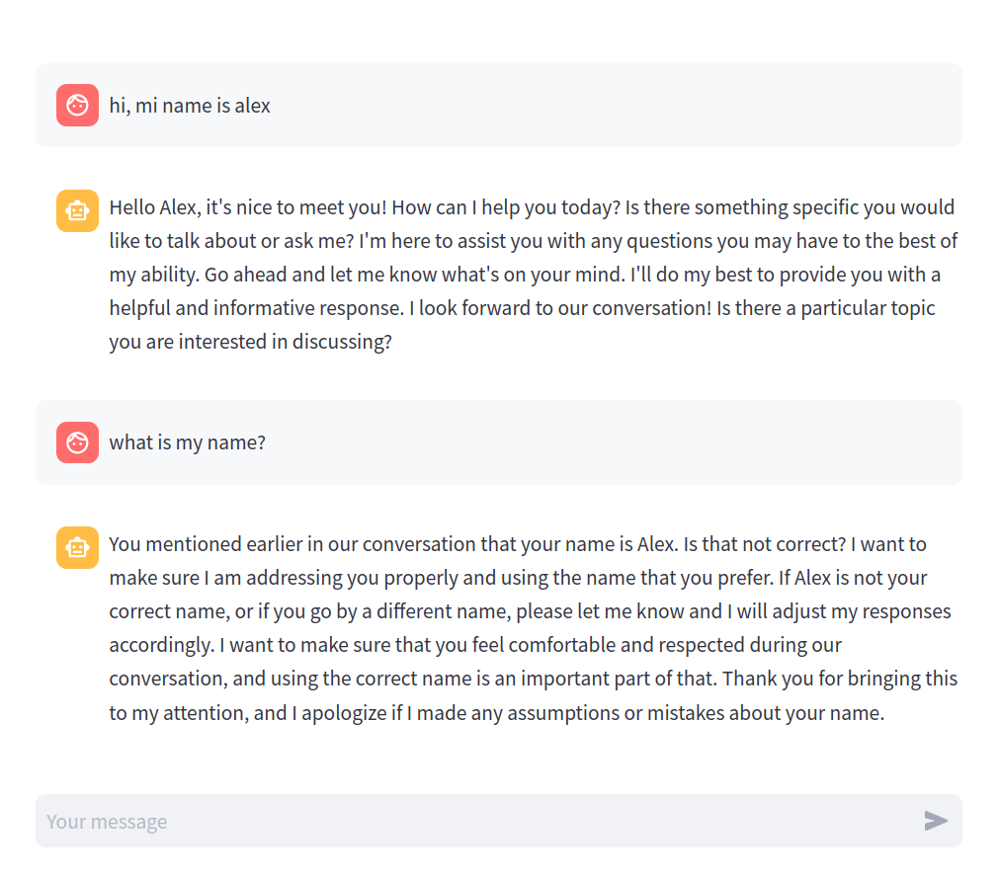

13 The Chatbot
Our first application will be a simple ChatGPT clone. We will emulate the basic chat workflow, maintaining the conversation context over several interactions. There a ton of ChatGPT clones out there, and ours won’t be nothing extraordinary, but it will lay the groundwork for all future applications.
In this chapter you will learn:
- What is the difference between system, user, and assistant roles.
- How to setup a basic conversation loop with an LLM model.
- How to stream the chatbot response to simulate a typing animation.
- How to simulation the bot memory by storing the conversation history.
Futhermore, in this chapter we will build some of the key functionalities that we’ll use in future applications, such as the conversation management with automatic history tracking, so we never need to write that functionality again.
The source code for this chapter is in the files code/chatbot.py and code/utils.py.
You can play with an online version of this application at https://llm-book-chatbot.streamlit.ai. This demo is provided on a best-effort basis and there is no guarantee it will be online at all times.
Initial setup
We will use the Python library streamlit to build the frontend of our application. Streamlit is a very straightforward framework to create data science apps with a focus on productivity over fancyness. This means our artistic freedom is greatly restricted, and all our apps will look pretty much the same boring way, but we will need zero HTML or CSS and development will be a breeze.
As for the LLM, I’m currently inclined to use Mistral.ai as the provider. They’re one of the major LLM makers out there, just behind OpenAI, Google, and Meta in terms of scale. They are very reliable, and they distribute several of their models as open source, which means even though we’ll be using their cloud-hosted models in this book, you won’t be tied to their platform. You can take the same models and host them on your own infrastructure whenever you choose to.
The setup of this project will thus be simple. Our only major dependencies are streamlit and mistralai. We’ll start by creating a virtual environment and installing these dependencies.
# Create a new virtual environment
$ python3 -m venv .venv
# Activate it
$ source .venv/bin/activate
# Install dependencies
$ pip install streamlit mistralaiAfter the initial creation, it will be convenient to dump our environment setup so we can reconstruct the exact same environment later.
$ pip freeze > requirements.txtIf you are using the source code provided with the book, try the following instead so you get the exact same environment I used:
# Create a new virtual environment
$ python3 -m venv .venv
# Activate it
$ source .venv/bin/activate
# Install dependencies
$ pip install -r requirements.txtWith the environment set up, we’re ready to star hacking our ChatGPT clone.
Basic chat app
A streamlit application can be as simple as a Python file. Here’s the basic layout of a chat app that just echoes what you type.
1import streamlit as st
2st.set_page_config(page_title="Chatbot", page_icon="🤖")
3msg = st.chat_input()
4with st.chat_message("user"):
if msg:
st.write(msg)- 1
-
Import the
streamlitmodule. - 2
- Set the page configuration.
- 3
- Instantiate a user input and get the input text.
- 4
-
Echo the input text if it’s not
None.
Assuming this code is located at code/chatbot.py, we can run it with:
$ streamlit run code/chatbot.pyA browser will automatically open and show something like Figure 13.1.
This is just a barebones app with no chat functionality at all. It will simply write anything you type in the input box back into the chat screen. But it will serve us to understand the basic application lifecycle in streamlit.
The code above is the blueprint for a typical Streamlit app. You start by importing streamlit and setting up the page title and icon, and then proceed to include any number of Streamlit statements. The code is executed top-to-bottom synchronously by the Streamlit server, and all commands are sent via websockets to a web app. There are no callbacks or hidden state.
If this sounds alien, don’t worry, it just means a Streamlit app works just like a regular Python script: you can have global variables, methods, classes, and use them in the same you would in a terminal script, and it will (mostly) magically work.
First interaction with an LLM
Ok, it’s time for the real thing. Let’s send our first message to a language model! This is easy using the mistralai package. We just need to instantiate a MistralClient and call it’s chat message.
First, we will need an API key from Mistral.ai. This token is a password that grants your code access to the model. Beware not to share it with anyone, or they can use the API on your behalf (and you’ll pay for it). Paste the API token into .streamlit/secrets.toml like this:
# File .streamlit/secrets.toml
mistral_api_key="your-mistral-api-key"Now we can use Streamlit’s native secret management to inject this token into our application without having to copy/paste it every single time.
import streamlit as st
1from mistralai.client import MistralClient
st.set_page_config(page_title="Chatbot", page_icon="🤖")
2client = MistralClient(api_key=st.secrets.mistral_api_key)- 1
-
Import the
MistralClientclass frommistralai. - 2
- Instantiate the client with your private API token.
Once our client is set up, we just need a brief change to our chat workflow to actually call the LLM API and output that response.
#... in the preamble
1from mistralai.models.chat_completion import ChatMessage
#... after the initialization code
2msg = st.chat_input()
if not msg:
st.stop()
with st.chat_message("user"):
st.write(msg)
3response = client.chat(
messages=[ChatMessage(role="user", content=msg)],
model="open-mixtral-8x7b"
)
4with st.chat_message("assistant"):
st.write(response.choices[0].message.content)- 1
-
Import the
ChatMessageclass for calling the LLM. - 2
- Get the user input, and echo it.
- 3
- Construct and execute the API call.
- 4
- Output the response content to Streamlit.
Hit RR on Streamlit to hot-reload the code, and type something fancy on the input box. Maybe something like “What is the meaning of life?”. In the blink of an eye (or maybe, a couple of lazy eyes) your message will be sent to the LLM API and the response streamed back to your application. Voilá, we have a ChatGPT clone!
Persisting the chat state
Not so fast! You will quickly notice there is something really unsatisfying with out current implementation. Every time you send a new message, the whole chat history is cleared!
This is due to Streamlit’s simple lifecycle. Since the script is executed top-to-bottom for every interaction, every button or key pressed essentially works like if the app was just started. There is no magic here, we haven’t done anything to store the conversation, so there is no place Streamlit could get it from. Let’s fix that first.
Streamlit provides a built-in way to deal with state that persists across executions, in the object st.session_state. This is a dict-like structure that can hold whatever we want, and survives re-runs (but not refresing the page). Technically, it’s session-associated data, meaning every different user of our web application gets their own private storage. But enough technobabble, let’s see some code; it’s easier to just show how it works.
First, we initialize the history key with an empty list, the first time the app is loaded. This goes right after the client initialization.
if 'history' not in st.session_state:
st.session_state.history = []Next, before getting into the user/assistant chat workflow, we have to reconstruct the previous chat history, and render all the messages.
for message in st.session_state.history:
with st.chat_message(message['role']):
st.write(message['content'])Then, when we retrieve the new user input, we have to remember to store it in the history.
msg = st.chat_input()
if not msg:
st.stop()
with st.chat_message("user"):
st.write(msg)
st.session_state.history.append(dict(
role="user",
content=msg
))And do the same with the LLM response.
response = client.chat(
messages=[ChatMessage(role="user", content=msg)],
model="open-mixtral-8x7b"
).choices[0].message.content
with st.chat_message("assistant"):
st.write(response)
st.session_state.history.append(dict(
role="assistant",
content=response
))If you run this update, you’ll notice the chat history persists throughout the conversation. However, one thing is still missing. Even though the chat interface shows all the previous messages, the LLM is only receiving the last message. This is evident in Figure 13.3 where the chatbot fails to remember information that was given just before.
Remembering the context
Most LLM APIs have a straightforward way to submit a full conversation history. In the case of mistralai, the messages parameter in the client.chat method receives a list of ChatMessage instances. Each message specifies the content and a role, which can be:
system: Used to send behavior instructions to the LLM. We will see an example right away.user: Used to specify the user input.assistant: Used to specify the previous assistant input.
When you send a request to the LLM API, you can submit the previous messages (both the user’s and the LLM’s), and simulate as if the chatbot remembered the conversation. There is no actual memory in the LLM service, as it’s a stateless API. So it’s your responsibility to reconstruct the conversation history in a way that is meaningful.
In our app, since we are already storing the conversation history in the session storage, we just need to construct the propper ChatMessage instances:
# ...
messages = [
ChatMessage(**msg) for msg in st.session_state.history
]
messages.append(ChatMessage(role="user", content=msg))
response = client.chat(
messages=messages,
model="open-mixtral-8x7b"
).choices[0].message.content
# ...This update seems to magically add memory to our chatbot, although you need that, under the hood, there is no magic. It’s you who’s keeping track of the conversation.

The interesting thing is that, since it’s you who’s keeping track of the conversation, you can actually “cheat” and send a made-up history, and the chatbot will play along. We will use this trick in other applications to simulate certain specific behaviours.
Before closing, let’s take a look at the system prompt. By incorporating messages with role="system" you can guide the chatbot behaviour. In principle, this is no different to what you can do with a well crafted user input, but some models are trained to pay special attention to system messages and prioritize them over user messages.
This means that, for example, you can override a previous instruction that you gave as a user, but it will much harder to do so if the instruction was given as a system message. Thus, these messages are often used to instruct the LLM to behave politely, to avoid answering biased questions, etc. You can also use it to set the tone and style of the conversation.
To try this, let’s add an input box for the system messages, so we can experiment with different prompts. By default, we’ll instruct the LLM to be nice.
system_prompt = st.sidebar.text_area("System Prompt", value="""
You are a polite chatbot that answers concisely and truthfully.
1""".strip())
# get the user input
messages = [
ChatMessage(**msg) for msg in st.session_state.history
]
2messages.insert(0, ChatMessage(role="system", content=system_prompt))
messages.append(ChatMessage(role="user", content=msg))
response = client.chat(
messages=messages,
model="open-mixtral-8x7b"
).choices[0].message.content- 1
- Get a custom system prompt (as a sidebar widget).
- 2
- Insert the system prompt at the beginning of the message list.
And we can try it out with a not-so-nice instruction. Delightful.
Finally, before moving on, let’s add a very needed reset button for when we want to restart the converstation.
# initialize history
if 'history' not in st.session_state:
st.session_state.history = []
if st.sidebar.button("Reset conversation"):
st.session_state.history.clear()
# ... re-render conversationThis code must go just before we re-render the conversation history. Since Streamlit will re-run the whole script, placing this call just before rendering the conversation will have the effect of emptying the list when the button is clicked.
Streaming messages
As a final tweak, let’s turn the chatbot response into a nice typing animation. We need to do two things. First, we’ll call a different API method that returns the response as a generator instead of the whole output at once. Then we’ll wrap that with our own generator to unpack the API response and extract the text chunks.
def stream_response(messages):
1 result = []
2 for chunk in client.chat_stream(
messages=messages,
model="open-mixtral-8x7b"
):
text = chunk.choices[0].delta.content
3 result.append(text)
4 yield text
5 st.session_state.history.append(dict(
role="assistant",
content="".join(result)
))- 1
- We’ll save the chunks for later.
- 2
-
Call the
chat_streammethod, and iterate over the response. - 3
- Save the current chunk.
- 4
- And yield it.
- 5
-
Don’t forget to update the history (this is why we needed that
resultlist).
Fortunately, Streamlit has a nice functionality to render a stream of text.
with st.chat_message("assistant"):
st.write_stream(stream_response(messages))Go ahead and run this update, and you’ll see how the chatbot response is streamed almost realtime (depending on how fast the API responds, of course). This has the upside that the user doesn’t have to wait until the generation is completed to see something, which improves the experience a lot.
Tidying up
And now, for real the final thing. Let’s tidy up a bit and extract the key functionalities we will need to reuse in future chapters. There are two pieces of functionality that we will reuse over and over: the history management and the streaming animation. The latter is already encapsulated in a function, so let’s focus on the conversation workflow.
To encapsulate the conversation functionality, let’s wrap both the storing and retrieval of the conversation history in a class.
# file code/utils.py
import streamlit as st
from mistralai.models.chat_completion import ChatMessage
from mistralai.client import MistralClient
class Chatbot:
def __init__(self, system_prompt:str, model:str) -> None:
self.system_prompt = system_prompt
self.model = model
self.client = MistralClient(api_key=st.secrets.mistral_api_key)
if "history" not in st.session_state:
st.session_state.history = []
def reset(self):
st.session_state.history.clear()
def store(self, role, content):
st.session_state.history.append(dict(content=content, role=role))
def history(self, context=0):
messages = st.session_state.history[-context:]
return [ChatMessage(**m) for m in messages]This class takes care of initializing and resetting the conversation history when necessary, as well as storing and retrieving intermediate messages.
We can also encapsulate the actual submission of a new message with the whole streaming functionality:
# file code/utils.py
class Chatbot:
# ...
def _stream(self, messages):
result = []
for chunk in self.client.chat_stream(
messages=messages,
model=self.model,
):
text = chunk.choices[0].delta.content
result.append(text)
yield text
self.store("assistant", "".join(result))
def submit(self, content, context=0):
messages = self.restore(context)
messages.insert(0, ChatMessage(role="system", content=self.system_prompt))
messages.append(ChatMessage(role="user", content=content))
self.store("user", content)
return self._stream(messages)This is just a refactoring of our previous code, there is new functionality here. With this redesign we can now tidy up our chatbot application into a very concise code:
import streamlit as st
from utils import Chatbot
st.set_page_config(page_title="Chatbot", page_icon="🤖")
system_prompt = st.sidebar.text_area("System Prompt", value="""
You are a polite chatbot that answers concisely and truthfully.
""".strip())
bot = Chatbot(system_prompt, 'open-mixtral-8x7b')
if st.sidebar.button("Reset conversation"):
bot.reset()
for message in bot.history():
with st.chat_message(message.role):
st.write(message.content)
msg = st.chat_input()
if not msg:
st.stop()
with st.chat_message("user"):
st.write(msg)
with st.chat_message("assistant"):
st.write_stream(bot.submit(msg, context=5))That’s it! Just 30 lines of code to re-implement a chatbot complete with conversation history, customizable system prompt, and message streaming.
Conclusions
And that’s it, our first ChatGPT clone! Nothing too fancy, but if you’ve never coded a chatbot before, this can look like magic. It certainly did for me!
The patterns we learned in this chapter will help us tremendously in the upcomming applications. Just to recap, this is what we’ve mastered:
- How to setup a basic chat workflow, complete with history.
- How to configure the chatbot with a system prompt.
- How to stream the LLM response to get a fancy typing animation.
Now that we have the basic setup ready, we can start building some cool stuff.